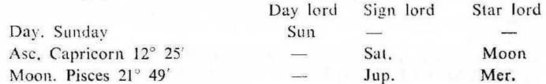
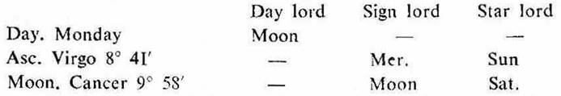
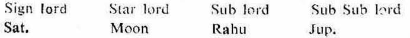
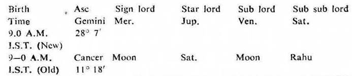
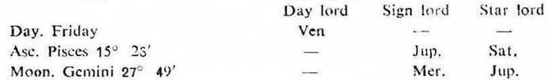
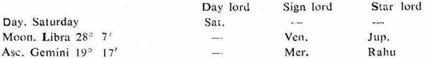
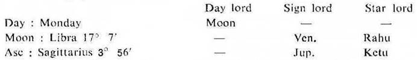
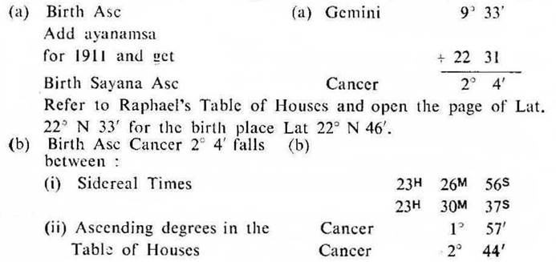
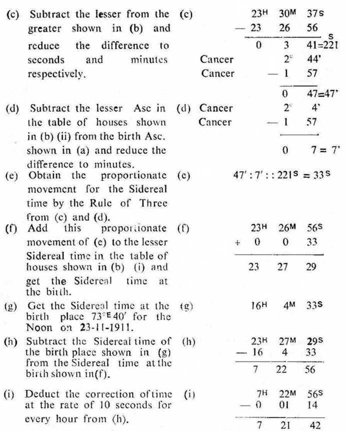
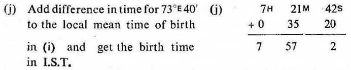

1 The ruling planets at the time of judgment correspond or agree or tally with:
(i) the ruling planets at the birth; or
(ii) the sign lord, star lord, sub lord and sub sub lord of the Asc at the birth.
The sign lord, star lord, sub lord, and sub sub lord of the Asc at the birth are found either in the star or sub of the ruling planet or planets at the time of judgment.
Example: Male, Birth 7–7–1912, Sunday; 8–42 P.M. I.S.T; 23°N2', 72 E 35'.
Ruling planets at the birth

Rahu in Pisces represents Jupiter. Ketu in Virgo represents Mercury, so the ruling planets are Sun, Moon, Mercury, Jupiter, Saturn, Rahu and Ketu.
Time of Judgment: 8–9–1969, Monday, 7–45 A.M. I.S.T; 23°N2', 72°E35'.
Ruling planets at the time of judgment

At this moment Rahu was in Aquarius. So it represents Saturn. Ketu was in Leo. So it represents Sun. Hence the ruling planets are Sun, Moon, Mercury, Saturn, Rahu and Ketu.
The ruling planets at the birth tally with the ruling planets at the time of judgment. Jupiter at the birth is in the star of Saturn the ruling planet at the time of judgment.
Asc. at the birth is Capricorn 12° 25', it is jointly ruled as under:

The sign lord, star lord and sub lord of the Asc at the birth agree with the ruling planets at the time of judgment; while the sub sub lord of the Asc at the birth is in the star of Saturn the ruling planet at the time of judgment.
Thus in this case the ruling planets both at the time of judgment and birth tally. The joint rulers of the Asc at the birth also correspond to the ruling planets at the time of judgment. So the birth time is correct.
2. In doubtful cases where two times for the birth are given proceed thus:
(a) Note the sign lord, star lord, sub lord and sub sub lord of the Asc at the birth for two given times.
(b) The case in which the sign lord, star lord, sub lord and sub sub lord of the Asc agree with the ruling planets at the time of judgment, accept the time in that case as the correct time of birth and reject the other.
Example: Male. Birth 15–6–1944, Thursday; 9–0 A.M. I.S.T. (New) or 9–0 A.M. I.S.T. (Old); 22° N 44', 72° E 29'.
At this time due to the 2nd world war, the Indian Standard time was made faster by one hour and it was called the New Indian Standard time. The birth time was 9–0 A.M., but it was not certain whether it was recorded according to the new I.S.T. or the old I.S.T.

Time of judgment. 31–7–1970, Friday; 10–30 P.M. I.S.T; 23°N2', 72° E 35'.
Ruling planets at the time of judgment

Thus the ruling planets are Mercury, Jupiter, Venus and Saturn.
The sign lord, star lord, sub lord and sub sub lord of the Asc Gemini 28° 7' for 9–0 A.M. I.S.T. (New) agree with the ruling planets at the time of judgment.
So take 9–0 A.M. I.S.T. (New) as the correct time of birth and reject 9–0 A.M. I.S.T. (Old).
3. In cases where the approximate interval of birth time viz. 2 AM to 3 A.M., 10 A.M. to 12 noon: 7 P.M. to 8 P.M.and so on is given, proceed as under:
(a) Note the ruling planets at the time of judgment.
(b) According to the date of birth, you should fix the probable sign of the Asc in which birth could have taken place.
Generally the sign owned by any one of the ruling planets will be rising in the Asc; or the sign occupied by Rahu or Ketu if it is a ruling planet, will be rising in the Asc.
(c) Then select the starlord and sub lord etc., suitable to this sign from the ruling planets. Bear in mind the order of preference among the ruling planets, also the importance of Rahu or Ketu.
(d) Find out the sensitive degree of this sign on which the sign lord, star lord, sub lord and sub sub lord operate jointly. This degree will show the exact position of the Ascendant at the birth. The time when this degree rises in the Asc. should be considered as the correct time of birth.
(e) It should be remembered that each planet governs three Nakshatras, Constellations, or Stars e. g. Venus governs 13° 20' to 26° 40' in Aries, Leo and Sagittarius as its Stars. So the ruling planet of any particular moment will operate as a star lord in three different signs. So it will be difficult as to which sign should be selected for fixing the time of birth. Hence it is necessary that the approximate time of birth should be ascertained as to whether it is between the Sun rise and Noon or between Noon and the Sun set or between the Sun set and Midnight or between Midnight and the Sun rise,
(f) At the time of judgment if any planet is found in the ascending sign or if it is in opposition to the Asc, then this planet plays an important role in fixing the time of birth. It should be given importance as a ruling planet, especially if that planet be in conj. with or aspected by any ruling planet. Of course, discretion has to be used in such cases.
Example: Male. Birth 23–11–1911, Thursday; 22° N 46', 73° E 40'. It was said that the ascending sign at the time of birth is Gemini and the approximate time is between 7–30 p.m. I.S.T. and 8–30 p.m. I.S.T.
Time of judgment. 31–1–1970, Saturday; 4–15 p.m. I.S.T; 23°N2', 72° E35'.
Ruling planets at the time of judgment

At this time Rahu was in Aquarius. So it represents Saturn. Hence Rahu may be preferred to Saturn. Thus the ruling planets are Mercury, Rahu, Jupiter and Venus.
At the time of judgment the Asc is Gemini. So it is certain beyond doubt that the ascending sign at the time of birth is Gemini. Now we have only to fix the degrees and minutes in Gemini.
Out of the ruling planets Mercury has already become the sign lord. So we have now to select the star lord, sub lord and sub sub lord out of Rahu, Jupiter and Venus.
In Gemini Mars, Rahu and Jupiter can become the star lords. Mars is not the ruling planet. So it is to be rejected. Hence the selection is to be made out of Rahu and Jupiter. Rahu or Ketu is to be considered stronger than any planet. So take Rahu as the star lord.
Then out of Jupiter and Venus we have to select the sub lord. Jupiter is the star lord of Moon, while Venus is the sign lord of Moon. So select Jupiter as the sub lord.
Venus automatically becomes the sub sub lord.
Now find out the degree and minute in Gemini on which all these ruling planets viz. Mercury, Rahu, Jupiter and Venus operate jointly.
Gemini 9° 32' 27" to 9° 50' 14" is the area on which all the ruling planets operate jointly viz. Mercury becomes the sign lord, Rahu the star lord, Jupiter the sub lord and Venus the sub sub lord.
On the date of birth, the time at which this degree of Gemini rises on the Asc should be taken as the time of birth.
On 23–11–1911, Thursday; 22° N 46', 73° E 40' at 7–57 p.m. I.S.T. Gemini 9° 33' rises on the Asc. So this time should be taken as the correct time of birth.
Re-verification: On 13–7–1970, Monday; at 5–45 p.m. I.S.T., 23° N 2', 72° E 35' there was a keen desire to re-verify the above time. Ruling planets at that time were as under.

Thus the ruling planets are Moon, Jupiter, Venus, Rahu and Ketu.
The star lord Rahu, the sub lord Jupiter and the sub sub lord Venus of the Asc Gemini 9° 33' at the time of birth correspond to the ruling planets at the time of re-verification. Hence 7–57 p.m. I.S.T. the time of birth which is fixed is correct beyond doubt.
Male. Birth 23–11–1911, Thursday; 22°N46', 73°E40'; Asc. Gemini9°33'.


This time is the interval between the noon previous to birth and the local mean time of birth.
In the case of p.m. birth this interval will be less than 12 hours and in the case of a.m. birth this interval will be more than 12 hours.
Here 7H 21M 42s is P.M. local mean time of the birth and it is the exact time of birth.

Thus the birth time for the Asc. Gemini 9° 33' on 23–11–1911 is 7H 57M 2 P.M. I.S.T.